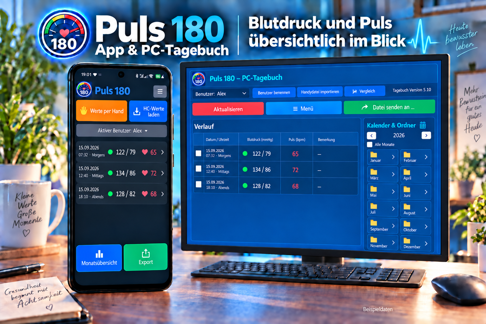

Einfach erfassen
Werte von Hand eingeben, aus Health Connect übernehmen oder von geeigneten Bluetooth-Messgeräten empfangen.
Blutdruck & Puls einfach im Blick
Das unkomplizierte Android-Tagebuch für Messwerte, Monatsübersichten und Berichte – entwickelt als privates Hobbyprojekt aus dem echten Alltag.

Werte von Hand eingeben, aus Health Connect übernehmen oder von geeigneten Bluetooth-Messgeräten empfangen.
Die Sprachansage liest Blutdruck und Puls verständlich vor.
Messungen nach Monaten ordnen und Durchschnittswerte schnell erkennen.
PDF-, Excel- und CSV-Dateien für Arzt, Drucker oder die eigenen Unterlagen erstellen.
Das zusätzliche PC-Tagebuch kann von zwei Benutzern verwendet werden.
Die Messwerte werden lokal verwaltet. Eine App-Sperre schützt den Zugriff.
Die App läuft auf unterstützten Android-Handys und Tablets. Health Connect steht ab Android 14 zur Verfügung. Bluetooth funktioniert nur mit geeigneten Messgeräten.
Alle Funktionen sind zehn Tage freigeschaltet.
Puls 180 Version 4.3 ladenPC-Tagebuch für zwei BenutzerPuls 180 dient der persönlichen Erfassung und Übersicht. Die App ist kein Medizinprodukt, stellt keine Diagnose und ersetzt keine ärztliche Beratung. Bei auffälligen Werten oder Beschwerden wenden Sie sich bitte an medizinisches Fachpersonal.
Die App verlangt kein Benutzerkonto. Messwerte werden lokal auf dem Gerät gespeichert. Daten werden nur weitergegeben, wenn der Benutzer selbst eine Export-, Freigabe- oder Synchronisierungsfunktion ausführt. Für Health Connect gelten zusätzlich die dort erteilten Berechtigungen.
Puls 180 wird privat und nebenberuflich entwickelt. Unterstützung erfolgt im möglichen zeitlichen Rahmen und ist kein medizinischer oder technischer Bereitschaftsdienst.